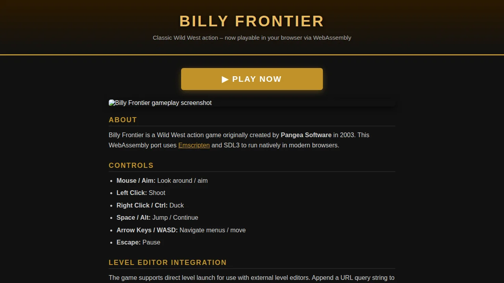

About
Billy Frontier is a Wild West action game originally created by Pangea Software in 2003. This WebAssembly port uses Emscripten and SDL3 to run natively in modern browsers.
Controls
- Mouse / Aim: Look around / aim
- Left Click: Shoot
- Right Click / Ctrl: Duck
- Space / Alt: Jump / Continue
- Arrow Keys / WASD: Navigate menus / move
- Escape: Pause
Level Editor Integration
The game supports direct level launch for use with external level editors. Append a URL query string to skip the title screen and jump straight to a level:
billyfrontier.html?level=1
Supported area numbers (see controls on the game page):
- 0 – Town Duel 1 1 – Town Shootout 2 – Town Duel 2
- 3 – Town Stampede 4 – Town Duel 3 5 – Target Practice 1
- 6 – Swamp Duel 1 7 – Swamp Shootout 8 – Swamp Duel 2
- 9 – Swamp Stampede 10 – Swamp Duel 3 11 – Target Practice 2
You can also supply a custom terrain file override via query parameter:
billyfrontier.html?level=1&terrainFile=:Terrain:custom_level.ter
For backward compatibility, the older #level=... / #terrain=... hash form still works.
Or use the on-screen file picker to upload a custom .ter file at runtime.
JavaScript API (for level editors)
Once the Module is loaded, the following functions are available:
Module.ccall('BF_SetDirectLaunchLevel', null, ['number'], [area])– skip to areaModule.ccall('BF_SetFenceCollision', null, ['number'], [1])– enable fence collisionsModule.ccall('BF_SetFenceCollision', null, ['number'], [0])– disable fence collisionsModule.ccall('BF_LoadTerrainData', null, ['array', 'number'], [bytes, bytes.length])– upload and activate a custom terrain file in one callModule.FS.writeFile('Data/Terrain/custom_level.ter', data)thenModule.ccall('BF_SetTerrainFile', null, ['string'], [':Terrain:custom_level.ter'])– manually upload and activate a custom terrain file